[N-World Contents] [Book Contents] [Prev] [Next] [Index]
Dungeon Environment
In this chapter you'll learn how to use N-Geometry's extrude and bridge functions to create a dungeon environment complete with interconnected hallways.
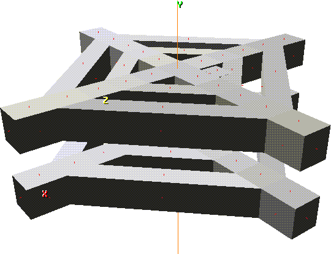
In this Chapter
You'll learn how to:
Building a Dungeon
1. Add a cube.
- Use GeoMenus>File>New Object>Cube.
2. Collect the faces around the sides of the cube.
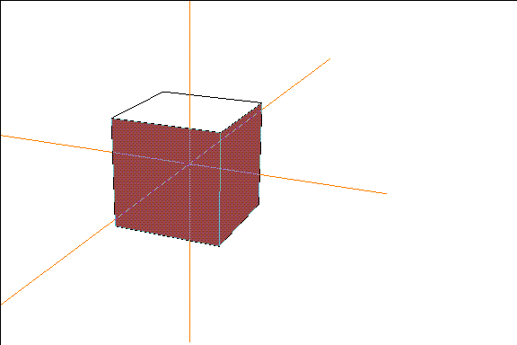
Figure 6.1 Collect the faces around the sides of the cube
3. (SHIFT-L), then (CLICK-L) on Extrude.
- Note that each selected face moves out along its own normal.
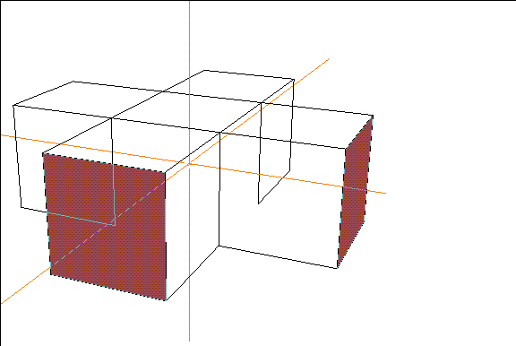
Figure 6.2 Extrude the collected faces along their individual normals
4. (CTRL+SHIFT-L) on an open area of the N-Geometry window to make Extrude the default operation.
Figure 6.3 Extrude the collected faces four or five times
Rather than make one long extrusion for our hallways, we want to create "blocks" that can be joined later by hallways
Joining the Hallways
We'll use the bridge operation to create a bridge or "tube" between two parts of the same object. We can use this command over and over to create an entire series of hallways.
5. (SHIFT-L) on a face along the side of one of the hallways.
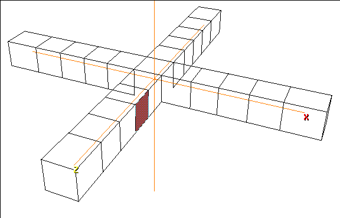
Figure 6.4 Pick a face for the end of one hallway
6. (CLICK-L) on Bridge.
7. (CLICK-L) on the corresponding face on the next hallway over.
- This creates a bridge within the same body; the model's integrity as a single skin, however, is maintained.
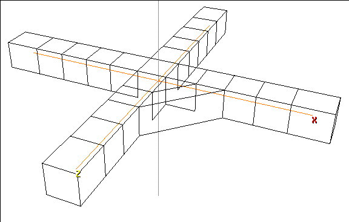
Figure 6.5 Join the two hallways
8. Make bridge the default operation.
- Continue bridging corresponding faces between adjacent hallways.
- When you're done, your model should look like Figure 6.6; you might want to turn the shading on temporarily to see how this looks:
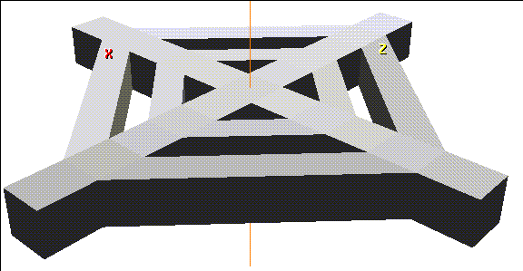
Figure 6.6 One level of the dungeon
Everting the Geometry of a Body
When you build an object starting with a primitive like our dungeon, the normals are typically pointing "out;" however, since we are going to be inside of our environment, we want a quick and easy way to flip the direction of the normals on the body. The Evert command flips all the normals for the selected object.
9. Turn shading for the dungeon off.
10. (CLICK-R) on GeoMenus>Object Display>Normals and select the cube object from which our dungeon was pulled out.
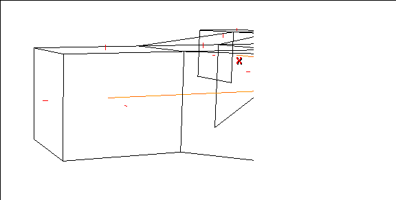
Figure 6.7 Displaying the normals for an object
- The short red markers show the face normals for each face on our dungeon level. Note that they extend outward in one direction from the face.
11. Turn shading for the dungeon back on.
12. Maneuver the camera around so that you're pointing straight down one of the main hallways of the dungeon.
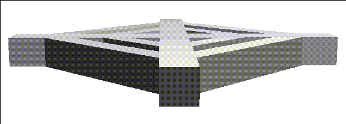
Figure 6.8 Align the camera so that you're looking down one of the long corridors
- If you want, you can use the "z" hot key and truck the camera back out.
13. Now truck the camera back and forth until you're inside the dungeon.
- You may find that you're already inside the dungeon if you use the "z" hot key, in which case you won't need to reposition the camera.
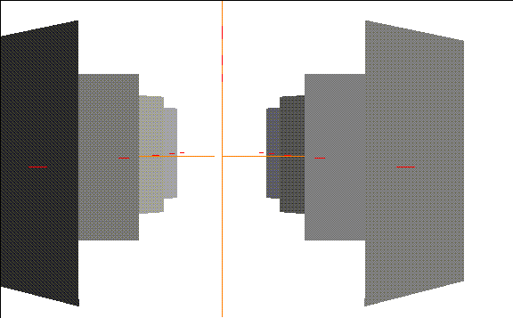
Figure 6.9 Inside the dungeon
- Because you're looking at the backs of some of the faces, you seem to be in an outside environment.
14. (CLICK-L) on bodies in the element sensitivity menu.
15. (SHIFT-L) on the dungeon.
16. (CLICK-L) on Evert.
- The geometry of the body is everted (its normals"flipped"). You should now be inside the dungeon:
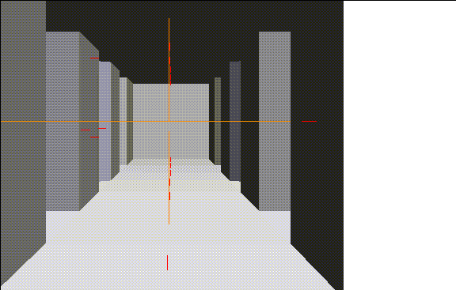
Figure 6.10 The everted dungeon
- If the dungeon itself is still selected, (CLICK-L) on none on the element sensitivity menu to deselect any objects for a better view.
- Maneuver the camera up and down the hallways; they are completely joined.
Adding a Door
While you may use such an environment in a game and use texture maps for detail you may still want to add a little geometry to your model.
To add a door:
17. (SHIFT-L) on a face.
18. (CLICK-L) on Inset.
- Use the default amount of 2.0 units for the inset operation.
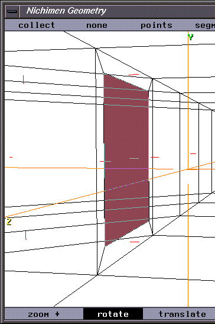
Figure 6.11 Inset a face where you want to create a door
19. (SHIFT-L) and (CLICK-M) on Axis Move>Y.
- Just like you did in the mansion tutorial earlier on, move the doorway down so it's even with the floor.
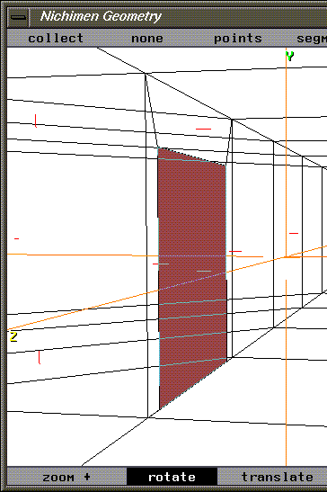
Figure 6.12 Inset a face where you want to create a door
20. (SHIFT-L) and Extrude the face inward to create a room (into which the door will open.
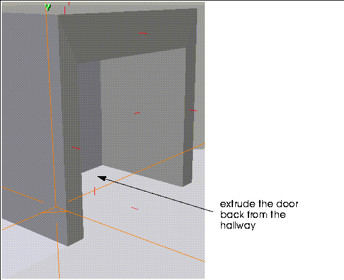
Figure 6.13 Extrude the inset face back into the wall
21. With the face still selected, (SHIFT-L).
22. (CLICK-R) on Chip Off and name the chipped off body "door."
- This creates a chip the same size as the extruded "wall" and lets you move the chipped off face along its normal. This makes it easy to position the chipped off face as a door for the room. Move it out so that its almost flush from the opening:
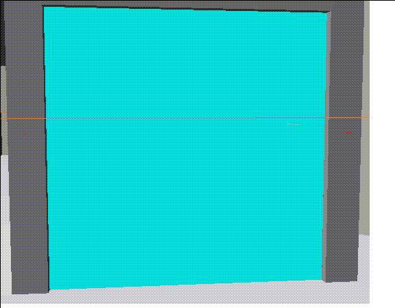
Figure 6.14 Move the chipped off region back toward the hallway
23. (SHIFT-L) on the face and (CLICK-M) on Rotate.
24. Choose Select a segment.
25. Choose the segment along the edge of the chipped off region where the hinges would be:
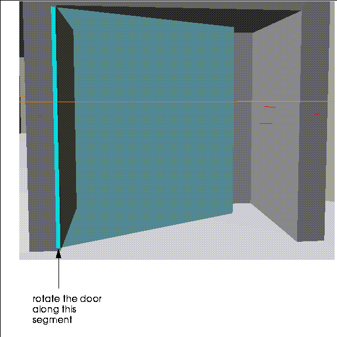
Figure 6.15 Rotate the door around the segment where the hinges would go
- Move the mouse left and right to swing the door.
- (Making the door a separate object makes it easier to animate in N-Dynamics.)
Doubling your Real Estate
Now that you've built a complete level of your dungeon, why not add another level (or two)? Try this:
26. Truck your camera backward so that you're looking down on top of the dungeon.
27. (CLICK-L) on bodies in the element sensitivity menu, then (SHIFT-L) on the dungeon.
28. (CLICK-L) on Evert to turn the dungeon back inside out.
29. (CLICK-L) on faces in the element sensitivity menu, then (SHIFT-L) on the face in the middle of the dungeon.
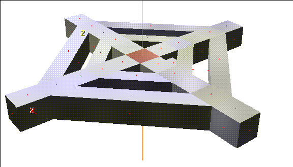
Figure 6.16 Select the face at the top center of the dungeon
30. (SHIFT-L) on the face and (CLICK-L) on extrude.
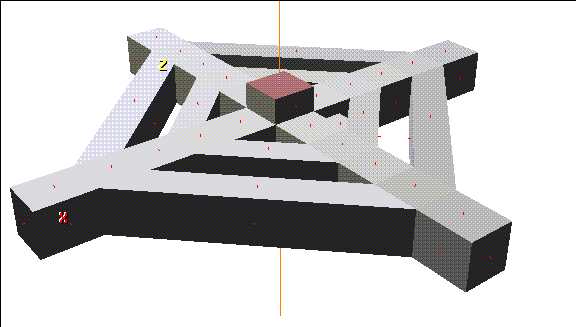
Figure 6.17 Extrude the face
31. (CLICK-L) on bodies in the element sensitivity menu, then (SHIFT-L) on the dungeon.
32. (CLICK-L) on Mirror.
- Choose the face that you extruded in step 30.
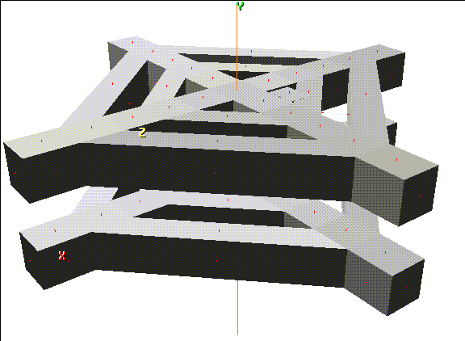
Figure 6.18 Mirroring is a powerful way to add geometry to a model
Congratulations!
You've now learned the basic techniques required to create any environment that includes interconnected hallways. For a haunted house, a dungeon, or a space station, the technique would be the same.
[N-World Contents] [Book Contents] [Prev] [Next] [Index]
 Another fine product from Nichimen documentation!
Another fine product from Nichimen documentation!
Copyright © 1996, Nichimen Graphics Corporation. All rights
reserved.